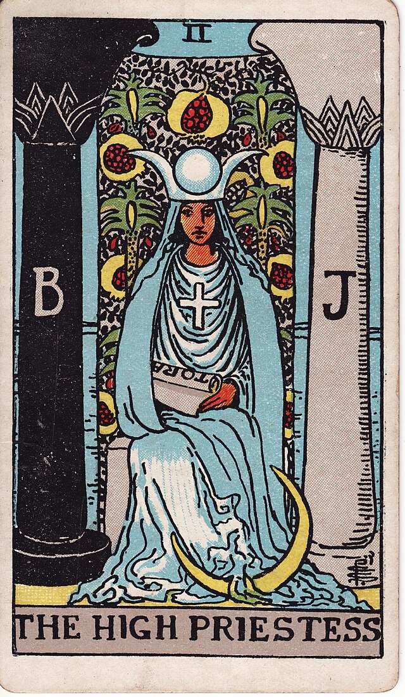
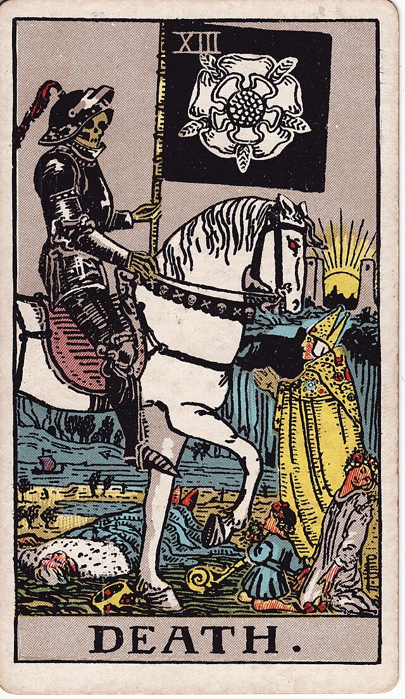
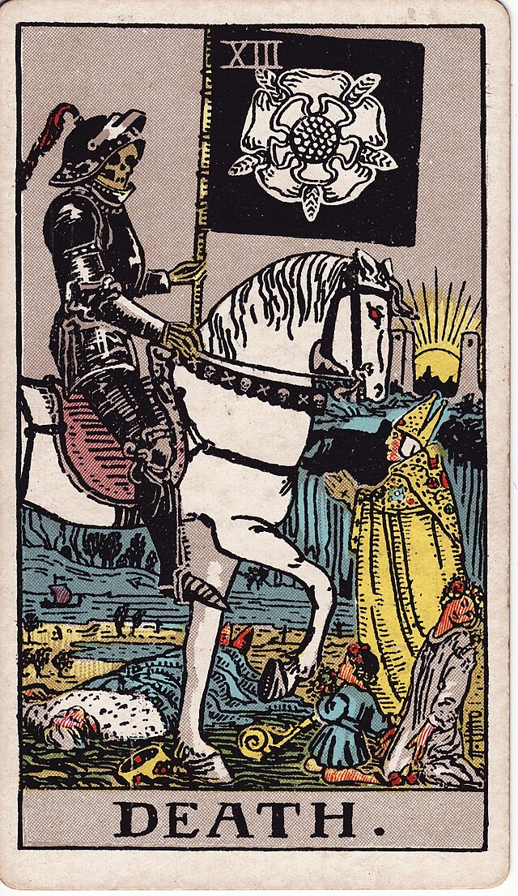

Таро — это древняя система гадания, которая обращается к подсознательным процессам и внутренним конфликтам. С помощью карт Таро человек может получить инсайты о своей жизни и сделать более осознанный выбор. Каждая карта несет в себе уникальные символы и значения, которые могут помочь в понимании текущих жизненных обстоятельств
История Таро уходит корнями в XV век, когда карты использовались в Европе для различных игр. Со временем, особенно в XVIII-XIX веках, Таро стало популярным инструментом для предсказаний и саморазмышления. Различные колоды Таро имеют свои уникальные стили и символику, но все они основаны на одних и тех же архетипах.
Современные практики утверждают, что Таро — это не просто способ предсказания будущего, но и мощный инструмент для личностного роста. Работая с картами, человек может более глубоко понять свои внутренние переживания и направления в жизни. Это путешествие в мир самопознания может открывать новые горизонты и возможности для каждого.
 

Сверху вы можете увидеть мои арканы Таро
Если вы хотите узнать свои арканы и то, как они ваш жизненный путь, обратитесь ко мне, я с радостью все расскажу и сделаю расклад =)
Я выучил CSS
Ну селекторы точно знаю.
Если вас интересует изучение Таро, пожалуйста, ознакомьтесь с следующими ссылками: